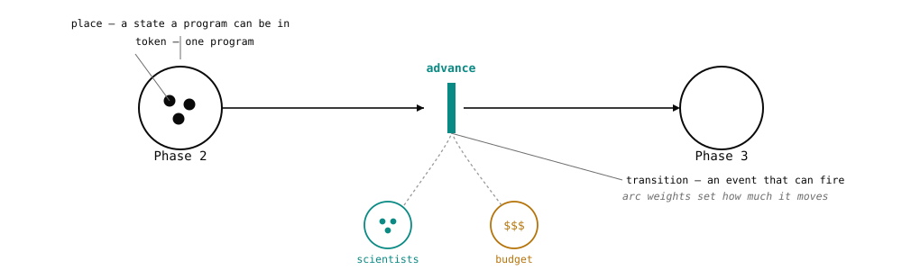
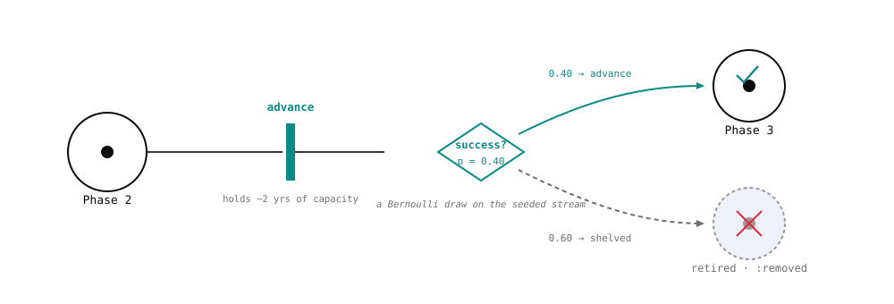
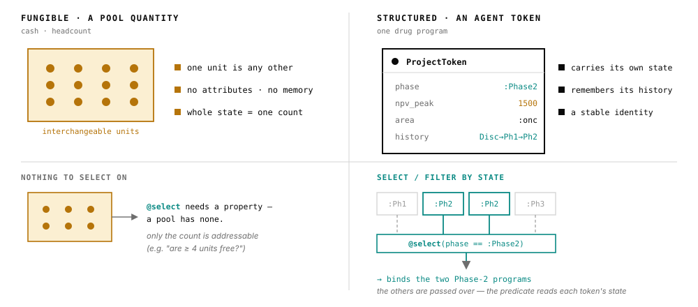

ReactiveDynamics.jl
A timed, stochastic, resource-constrained Petri net / discrete-event engine for system-dynamics-style modeling of business and R&D processes — budgeting, ledgers, what-if analysis, rNPV. Despite the reaction-network DSL surface, it is not a chemical reaction network: chemical kinetics is just the archetypal instance of the underlying ontology.
The central concept is a transition: a stateful recipe that spawns in-flight instances at a Poisson (or deterministic) rate, occupies shared finite resources (species) over a cycle time, and completes with a terminal probability-of-success that emits its products. Resources carry a modality governing allocation, a priority-weighted allocator rations them under contention, and a cost/reward/valuation ledger accrues into a per-step log. Structured/agentic tokens are first-class entities (a "project" carrying its phase, npv, cost-to-date) that can be instantiated, selected by predicate, advanced through lifecycle phases, and audited per-program. A model is a pure, eval-free typed data artifact that round-trips through a single JSON serialization. ReactiveDynamics sits on top of AlgebraicAgents.jl: a ReactionNetworkProblem is an AA agent, so a network is a node in a larger heterogeneous hierarchy.

This site is being built out under the documentation rework (branch docs-tutorials). The introductory tutorial is the first published page and the quality bar for the rest. The full structure — tiered tutorials, applied case studies, and an API reference, with the "why" carried by the normative spec and two companion papers rather than re-hosted here — is chartered in spec/DOCS_CHARTER.md. Until a page lands here, the runnable demo/ tours are the source of truth for working code.
Find your way by intent
- New here? Start with the introductory tutorial — author, simulate, and read your first model end to end, closing on a computed, decision-relevant quantity. Then the advanced tutorial (structured tokens, resource modalities, in-model decision rules) and the expert tutorial (composition, AlgebraicAgents coupling, checkpointing).
- What can it do for my decision? The applied case studies are decision memos with a headline number: "What is the marginal eNPV of the Nth scientist?", "What is this in-licensing asset worth to this pipeline?", and "When should you kill a program?".
- How do I call X? The API reference, organized by capability (authoring, structured tokens, rules & actions, construction & simulation, composition, serialization, analysis & visualization, AlgebraicAgents coupling).
- Why does it behave this way? The normative operational-semantics contract (§1–§15) and the Architecture Decision Records are the source of truth — the modality truth table, the single-clock time model, and the determinism/seeding obligations. Two companion papers argue the why in scholarly and executive registers (see
spec/DOCS_CHARTER.md§8).
How the engine thinks
Two more pictures carry most of the remaining intuition — where the randomness lives, and the two kinds of token the engine holds at once.

:removed but kept on the books, so its history survives for analysis. Multiply these per-phase odds along the chain and you get a program's true probability of ever reaching market: risk-adjustment that emerges from the dynamics rather than being bolted on. Every draw routes through one seeded stream, so a run is reproducible from its seed.
@select and filter on that state. Holding both in one net — the simplicity of pools where things are interchangeable, the fidelity of individuals where identity matters — is the distinctive move.A first taste
A plain-species SIR epidemic, end to end — the metalanguage, a seeded run, and reading the solution by name:
using ReactiveDynamics
sir = @reaction_network begin
α * S * I, S + I --> 2I, name => infection # a bare numeric rate is a stochastic (Poisson) intensity
β * I, I --> R, name => recovery
end
@prob_init sir S = 999 I = 10 R = 0
@prob_params sir α = 0.0001 β = 0.01
@prob_meta sir tspan = 250 dt = 0.1
prob = ReactionNetworkProblem(sir; seed = 1) # seed= owns the per-run RNG — the only route to reproducibility
simulate(prob)
prob.sol[!, "I"] # read solution columns BY NAME (order is construction order)The introductory tutorial takes this from here to a computed, decision-relevant quantity.